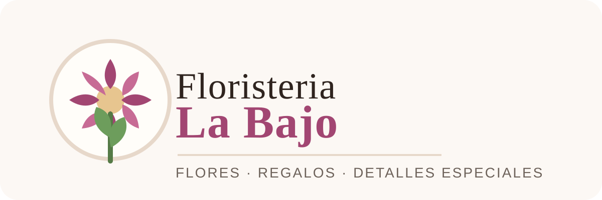

Floristería Labajo — Web & Management Platform
Plataforma integral para la gestión interna y venta online de Floristería Labajo. Unifica un portal web intuitivo para clientes con un robusto sistema de administración para el seguimiento de pedidos, control de stock de flor fresca y logística de entregas.
La persistencia y reglas de negocio se estructuran sobre una base de datos relacional conectada mediante JDBC & SQL en Java, integrada con CI/CD automatizado en GitHub Actions.